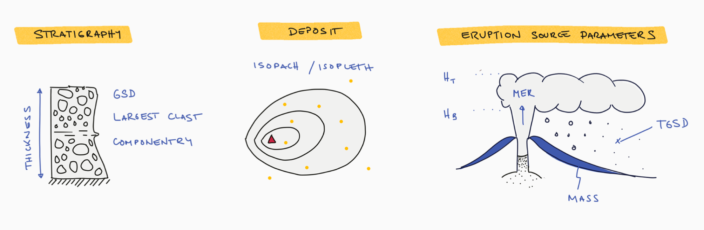
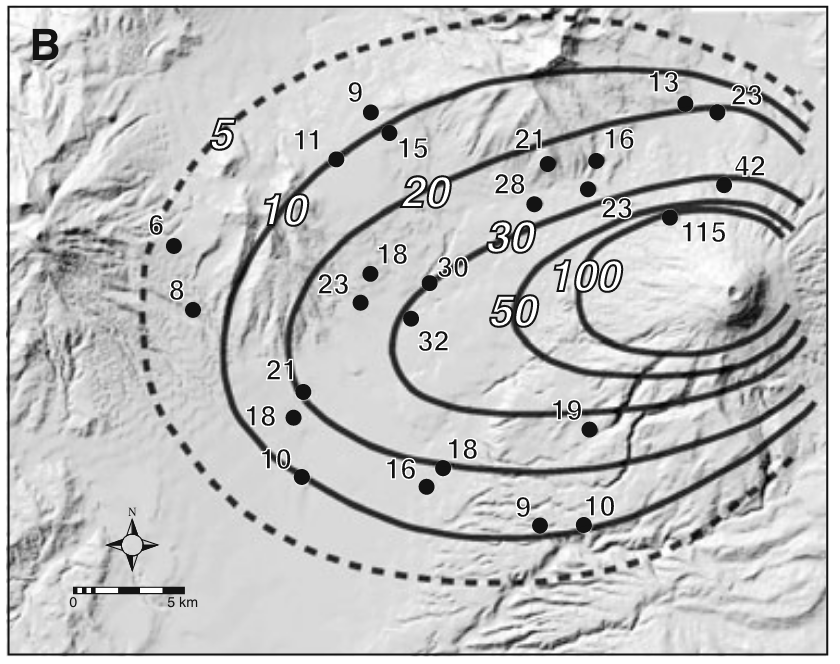
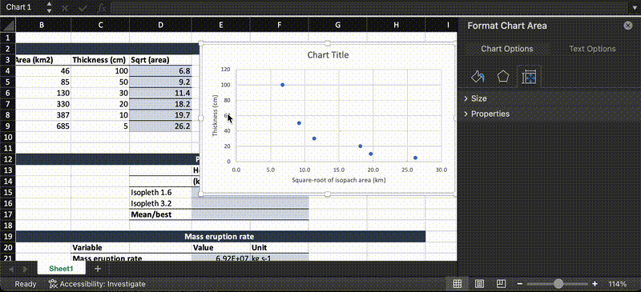
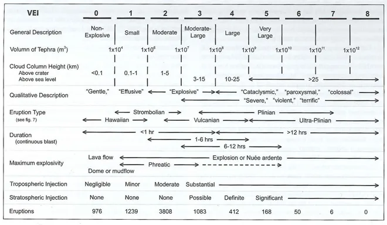
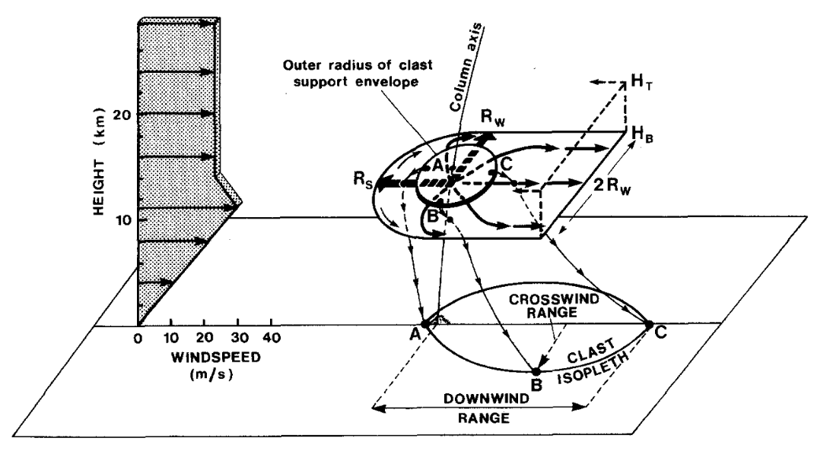

Quantifying eruption source parameters from tephra fallout deposits
Physical volcanology course
Sébastien Biass, Riccardo Simionato, Frank Förster, Tom Sheldrake
April 7 2025
Introduction
The aim of this lab is to apply techniques to quantify eruption source parameters (ESP) from tephra fall deposits. This includes:
- From field measurements at the outcrop level, producing isopach and isopleth maps;
- Calculating critical ESP such as plume height and tephra volume

Compute all parameters and discuss all points that are highlighted in the text. The lab uses the tephra fall deposit Layer 5 of Cotopaxi volcano in Ecuador, which is a black scoriaceous lapilli fallout with an age of 1,180±80 years B.P. and a whole-rock silica content of 58 wt.% (Barberi et al., 1995; Biass and Bonadonna, 2011)1 2. Thickness and maximum clast measurements at each outcrop are provided. It is time consuming to estimate the areas of isopach and isopleth, so use the data provided separately.
You are provided with the following files:
Volume of the tephra fallout deposit
The volume of tephra deposits is estimated from isopach maps by integrating the area below a curve plotting the logarithm of the thickness of isopach contours (y-axis) against the square-root of the isopach area (x-axis). On such plots, the exponential segment method of Fierstein & Nathenson (1992)18 states that a thickness \(T\) at any \(x\) value can be expressed as:
Equation 1
with \(T_0\) being the maximum deposit thickness, \(k\) the slope of the exponential segment and \(\sqrt{A}\) the square root of the isopach area. Based on the assumption of ellipsoidal shapes of isopachs Fierstein & Nathenson (1992)18 estimate the volume \(V\) as:
Equation 2
Exercise

Table 1: Isopach data for Layer 5 of Cotopaxi volcano
| Isopach area (km\(^2\)) | Thickness (cm) |
|---|---|
| 46 | 100 |
| 85 | 50 |
| 130 | 30 |
| 330 | 20 |
| 387 | 10 |
| 685 | 5 |
Estimate the volume of Layer 5 using the 1-exponential segment method of Fierstein & Nathenson (1992)18 using the isopach map shown in Figure 1:
-
In Excel, import the isopach data provided in Table 1 and plot the thickness (\(cm\)) versus the square-root of the area (\(km\)) as a scatter plot. Change the y-axis to a logarithmic scale
-
Fit an exponential trendline and display its equation to estimate the intersect (\(T_0\)) and the thinning rate (\(k\)) as in Equation 1

Note on units
\(T_0\) as expressed from the equation is now in the same unit as the y-axis. You need to convert it to a unit consistent with the x-axis in order to calculate the volume, which will have the same unit to the cube.
For instance, if both \(sqrt(A)\) and \(T_0\) are in \(km\), then the volume will be in \(km^3\).
-
Calculate the
volumeof the tephra fallout deposit using Equation 2 -
Estimate the corresponding
VEIusing the diagram in Fig. 2 from Newhall and Self (1982)(Newhall and Self, 1982)3

Plume height
The method of Carey & Sparks (1986)(Carey and Sparks, 1986)5 relies on the construction of theoretical envelopes within which the vertical velocity of the column and the terminal velocity of a clast of specified size and density are equal. Based on this, the crosswind and downwind ranges of isopleth maps can be used to estimate plume height and wind speed. This method method was further updated by Rossi et al. (2019)(Rossi et al., 2019)6 to account for a better parametrisation of physical processes in the plume (e.g., plume rise, settling velocity of particles).

Exercise
Calculate the plume height (\(km\) above vent) with the method of Rossi et al. (2019)(Rossi et al., 2019)6 (Fig. 3). The provided map contains measurements of maximum lithics (density of \(2500\ kg/m^3\)). This method works with isopleth contour values of 1.6 and 3.2 \(cm\), so make sure to contour isopleth accordingly. Assume a mean sampling elevation of 2500 \(m\ asl\). Cotopaxi has an elevation of 5700 \(m\ asl\).
- Contour isopleths on the provided map. Make sure you contour values that are presented in Figure 3.
- Measure the downwind and crosswind ranges of the deposit and report them on Figure 3 to estimate a plume height above mean sampling elevation.
- Calculate the
plume heightand thewind speedas an average value of the results obtained from the different plots considered. Please also indicate the associated variation (i.e. ±(max-min)/2). Make sure to subtract the average height of sampling from the height obtained with the nomograms in order to derive the height above the vent.
Summary
This exercise provided an introduction on the characterisation of eruption source parameters from tephra fallout deposits, which is a critical process to infer the eruptive histories of volcanic systems from their stratigraphy. Namely, we learned:
- How to calculate the volume of tephra deposits from isopach maps;
- How to estimate VEI of eruptions.
- How to estimate the maximum plume height and wind speed from isopleth maps;
Further reading
This list contains some references for the characterisation of tephra deposits.
Characterization of tephra-fall deposits
- (Thorarinsson, 1954)9
- (Wilson, 1972)10
- (Walker, 1973)11
- (Wright et al., 1980)12
- (Walker, 1980)13
- (Carey and Sparks, 1986)5
- (Sparks, 1986)14
- (Wilson and Walker, 1987)7
- (Cas and Wright, 1988)15
- (Houghton and Carey, 2015)16
Volume calculation
- (Pyle, 1989)17
- (Fierstein and Nathenson, 1992)18
- (Legros, 2000)19
- (Sulpizio, 2005)20
- (Bonadonna and Houghton, 2005)21
- (Bonadonna and Costa, 2013)22
- (Burden et al., 2013)23
- (Daggitt et al., 2014)24
- (Engwell et al., 2015)25
- (Yang and Bursik, 2016)26
- (Nathenson, 2017)27
Mass eruption rate
- (Wilson and Walker, 1987)7
- (Mastin et al., 2009)28
- (Degruyter and Bonadonna, 2012)8
- (Woodhouse et al., 2013)29
- (Aubry et al., 2023)30
Uncertainty assessment
- (Biass and Bonadonna, 2011)2
- (Cioni et al., 2011)31
- (Engwell et al., 2013)32
- (Biass et al., 2014)33
- (Klawonn et al., 2014a)34
- (Klawonn et al., 2014b)35
- (Bonadonna et al., 2015)36
-
Barberi F, Coltelli M, Frullani A, Rosi M, Almeida E. Chronology and dispersal characteristics of recently (last 5000 years) erupted tephra of Cotopaxi (Ecuador): Implications for long-term eruptive forecasting. Journal of Volcanology and Geothermal Research 1995;69:217--39. ↩
-
Biass S, Bonadonna C. A quantitative uncertainty assessment of eruptive parameters derived from tephra deposits: The example of two large eruptions of Cotopaxi volcano, Ecuador. Bulletin of Volcanology 2011;73:73--90. https://doi.org/10.1007/s00445-010-0404-5. ↩↩
-
Newhall CG, Self S. The volcanic explosivity index (VEI)- An estimate of explosive magnitude for historical volcanism. Journal of Geophysical Research 1982;87:1231--8. ↩
-
Pyle DM. Sizes of volcanic eruptions. In: Sigurdsson H, Houghton BF, Ballard RD, editors. Encyclopedia of Volcanoes, San Diego: Academic Press; 2000, p. 263--9. ↩
-
Carey S, Sparks R. Quantitative models of the fallout and dispersal of tephra from volcanic eruption columns. Bull Volcanol 1986;48:109--25. ↩↩
-
Rossi E, Bonadonna C, Degruyter W. A new strategy for the estimation of plume height from clast dispersal in various atmospheric and eruptive conditions. Journal of Volcanology and Geothermal Research 2019;505:1--12. https://doi.org/10.1016/j.epsl.2018.10.007. ↩↩
-
Wilson L, Walker G. Explosive volcanic eruptions - VI. Ejecta dispersal in plinian eruptions: The control of eruption conditions and atmospheric properties. Geophys J R Astr Soc 1987;89:657--79. ↩↩
-
Degruyter W, Bonadonna C. Improving on mass flow rate estimates of volcanic eruptions. Geophys Res Lett 2012;39:L16308. https://doi.org/10.1029/2012GL052566. ↩
-
Thorarinsson S. The eruption of Hekla, 1947-48, 3, The tephra-fall from Hekla, March 29th, 1947. Visindafélag ĺslendinga 1954:1:3. ↩
-
Wilson L. Explosive Volcanic Eruptions-II The Atmospheric Trajectories of Pyroclasts. Geophysical Journal International 1972;30:381--92. https://doi.org/10.1111/j.1365-246X.1972.tb05822.x. ↩
-
Walker GPL. Explosive volcanic eruptions --- a new classification scheme. Geologische Rundschau 1973;62:431--46. https://doi.org/10.1007/BF01840108. ↩
-
Wright JV, Smith AL, Self S. A working terminology of pyroclastic deposits. Journal of Volcanology and Geothermal Research 1980;8:315--36. https://doi.org/10.1016/0377-0273(80)90111-0. ↩
-
Walker GPL. The Taupo pumice: Product of the most powerful known (ultraplinian) eruption. J Volcanol Geotherm Res 1980;8:69--94. ↩
-
Sparks R. The dimensions and dynamics of volcanic eruption columns. Bull Volcanol 1986;48:3--15. ↩
-
Cas RAF, Wright J. Volcanic successions, modern and ancient: A geological approach to processes, products, and successions. London: Allen\ & Unwin; 1988. ↩
-
Houghton BF, Carey RJ. Pyroclastic fall deposits. In: Sigurdsson H, Houghton BF, McNutt S, Rymer H, Stix J, editors. Encyclopedia of Volcanoes, 2nd Edition, London: Academic Press; 2015, p. 599--615. ↩
-
Pyle DM. The thickness, volume and grainsize of tephra fall deposits. Bulletin of Volcanology 1989;51:1--15. https://doi.org/10.1007/BF01086757. ↩
-
Fierstein J, Nathenson M. Another look at the calculation of fallout tephra volumes. Bulletin of Volcanology 1992;54:156--67. https://doi.org/10.1007/BF00278005. ↩↩↩↩
-
Legros F. Minimum volume of a tephra fallout deposit estimated from a single isopach. J Volcanol Geotherm Res 2000;96:25--32. ↩
-
Sulpizio R. Three empirical methods for the calculation of distal volume of tephra-fall deposits. J Volcanol Geotherm Res 2005;145:315--36. ↩
-
Bonadonna C, Houghton B. Total grain-size distribution and volume of tephra-fall deposits. Bull Volcanol 2005;67:441--56. ↩
-
Bonadonna C, Costa A. Plume height, volume, and classification of explosive volcanic eruptions based on the Weibull function. Bulletin of Volcanology 2013;75:1--19. ↩
-
Burden RE, Chen L, Phillips JC. A statistical method for determining the volume of volcanic fall deposits. Bulletin of Volcanology 2013;75:1--10. https://doi.org/10.1007/s00445-013-0707-4. ↩
-
Daggitt ML, Mather TA, Pyle DM, Page S. AshCalc--a new tool for the comparison of the exponential, power-law and Weibull models of tephra deposition. Journal of Applied Volcanology 2014;3:7. https://doi.org/10.1186/2191-5040-3-7. ↩
-
Engwell SL, Aspinall WP, Sparks RSJ. An objective method for the production of isopach maps and implications for the estimation of tephra deposit volumes and their uncertainties. Bulletin of Volcanology 2015;77:1--18. https://doi.org/10.1007/s00445-015-0942-y. ↩
-
Yang Q, Bursik M. A new interpolation method to model thickness, isopachs, extent, and volume of tephra fall deposits. Bulletin of Volcanology 2016;78:68. https://doi.org/10.1007/s00445-016-1061-0. ↩
-
Nathenson M. Revised tephra volumes for Cascade Range volcanoes. Journal of Volcanology and Geothermal Research 2017;341:42--52. https://doi.org/10.1016/j.jvolgeores.2017.04.021. ↩
-
Mastin L, Guffanti M, Servranckx R, Webley P, Barsotti S, Dean K, et al. A multidisciplinary effort to assign realistic source parameters to models of volcanic ash-cloud transport and dispersion during eruptions. Journal of Volcanology and Geothermal Research 2009;186:10--21. ↩
-
Woodhouse MJ, Hogg AJ, Phillips JC, Sparks RSJ. Interaction between volcanic plumes and wind during the 2010 [Eyjafjallaj[ö]{.nocase}kull]{.nocase} eruption, Iceland. Journal of Geophysical Research: Solid Earth 2013;118:92--109. https://doi.org/10.1029/2012JB009592. ↩
-
Aubry TJ, Engwell SL, Bonadonna C, Mastin LG, Carazzo G, Eaton ARV, et al. New Insights Into the Relationship Between Mass Eruption Rate and Volcanic Column Height Based On the IVESPA Data Set. Geophysical Research Letters 2023;50:1--12. https://doi.org/10.1029/2022GL102633. ↩
-
Cioni R, Bertagnini A, Andronico D, Cole PD, Mundula F. The 512 AD eruption of Vesuvius: Complex dynamics of a small scale subplinian event. Bulletin of Volcanology 2011;73:789--810. https://doi.org/10.1007/s00445-011-0454-3. ↩
-
Engwell SL, Sparks RSJ, Aspinall WP. Quantifying uncertainties in the measurement of tephra fall thickness. Journal of Applied Volcanology 2013;2:1--12. https://doi.org/10.1186/2191-5040-2-5. ↩
-
Biass S, Bagheri G, Aeberhard W, Bonadonna C. TError: Towards a better quantification of the uncertainty propagated during the characterization of tephra deposits. Statistics in Volcanology 2014;1:1--27. https://doi.org/10.5038/2163-338X.1.2. ↩
-
Klawonn M, Houghton BruceF, Swanson DonaldA, Fagents SarahA, Wessel P, Wolfe CecilyJ. Constraining explosive volcanism: Subjective choices during estimates of eruption magnitude. Bulletin of Volcanology 2014a;76:1--6. https://doi.org/10.1007/s00445-013-0793-3. ↩
-
Klawonn M, Houghton BruceF, Swanson DonaldA, Fagents SarahA, Wessel P, Wolfe CecilyJ. From field data to volumes: Constraining uncertainties in pyroclastic eruption parameters. Bulletin of Volcanology 2014b;76:1--16. https://doi.org/10.1007/s00445-014-0839-1. ↩
-
Bonadonna C, Biass S, Costa A. Physical characterization of explosive volcanic eruptions based on tephra deposits: Propagation of uncertainties and sensitivity analysis. Journal of Volcanology and Geothermal Research 2015;296:80--100. https://doi.org/10.1016/j.jvolgeores.2015.03.009. ↩